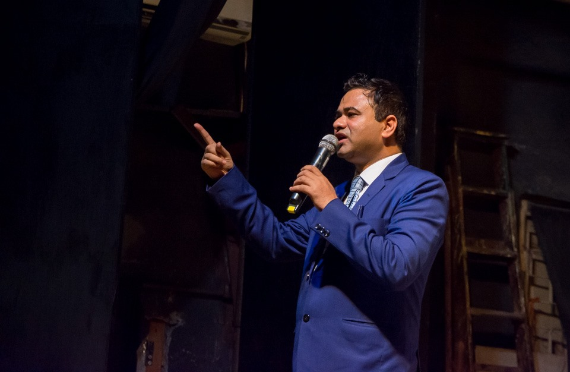
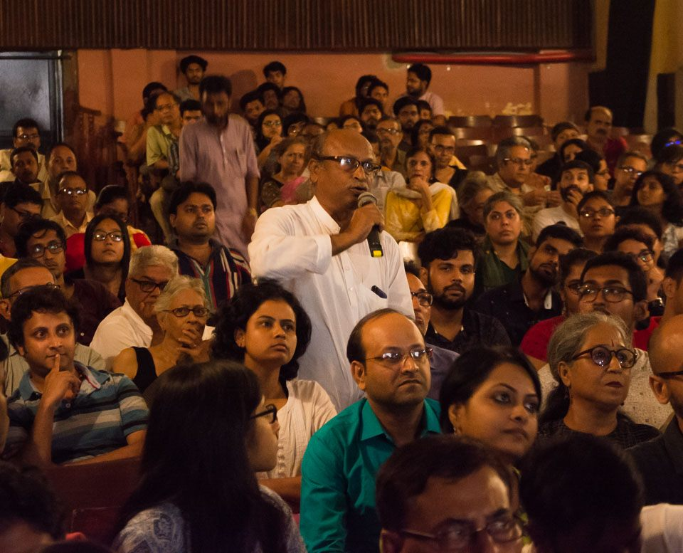
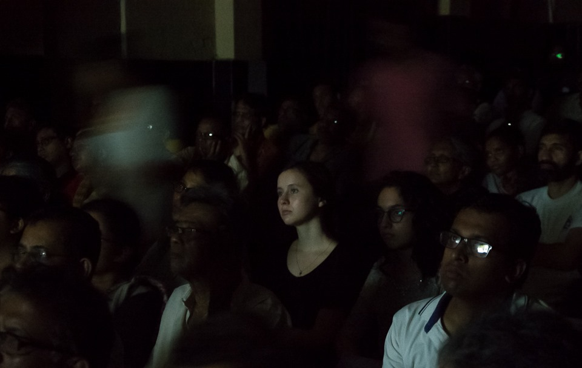

Public Health in Crisis
Glimpses from the monthly film screenings and conversations programme titled 'Public Health in Crisis', organised by People's Film Collective on 7th July in Kolkata, with Dr. Kafeel Khan, suspended doctor of BRD Medical College, Gorakhpur, as the keynote speaker.

The programme addressed the crumbling condition of Public Health in India and Eastern India, and how it is affecting the poorest and most marginalised communities (including minorities, dalits, mahadalits, and economically backward people) who are bearing the most brutal brunt of shocking levels of State apathy.
The day's conversations were held in the immediate context of the recent encephalitis deaths of hundreds of children in Muzaffarpur in Bihar, and the encephalitis deaths of children two years back in Gorakhpur in Uttar Pradesh when the Oxygen Tragedy unfolded. These have not been one-off incidents, but a regular occurence. It is mind-boggling how a preventable disease is allowed to take so many lives, year after year after year.
The keynote speaker, Dr. Kafeel Khan, has been a victim of targeting by the State as well as someone who has been working as a people's doctor in the face of heavy odds. He spoke of his own experience in Gorakhpur few years back, and of the experience he gained from serving as a people's doctor in Muzaffarpur. He talked about the condition of public health infrastructure within the broader context of privatisation of medical education and the health policy of the Central government and State governments, the reasons for the disease, the misconceptions, the role of the governments (central and state governments), the medical fraternity and medical bodies (like IMA etc.).
Before Dr. Khan's talk, a film, 'Ek Maut: Kuchh Sawal', directed by Asim Chaudhuri and Sivananda Mukherjee, on the political struggles of Chattisgarh Mukti Morcha led by the late comrade Shankar Guha Niyogi, wherein they bulit new constructive workers' alternatives for reclaiming public health as a political and social issue, was screened. One of the directors, Asim Chaudhuri spoke briefly before the screening.
A leaflet with an evolving charter of healthcare demands for all citizens in West Bengal was circulated and the audience invited to chip in with their own addition to the citizen's healthcare charter.
Overall, the programme left us deliberating once again on how we should think about public health as a fundamental right, and how we should work for a country with free and best possible healthcare for all.
Photograhy: Aniruddha Dey